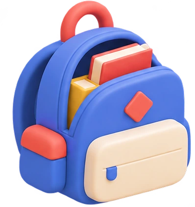
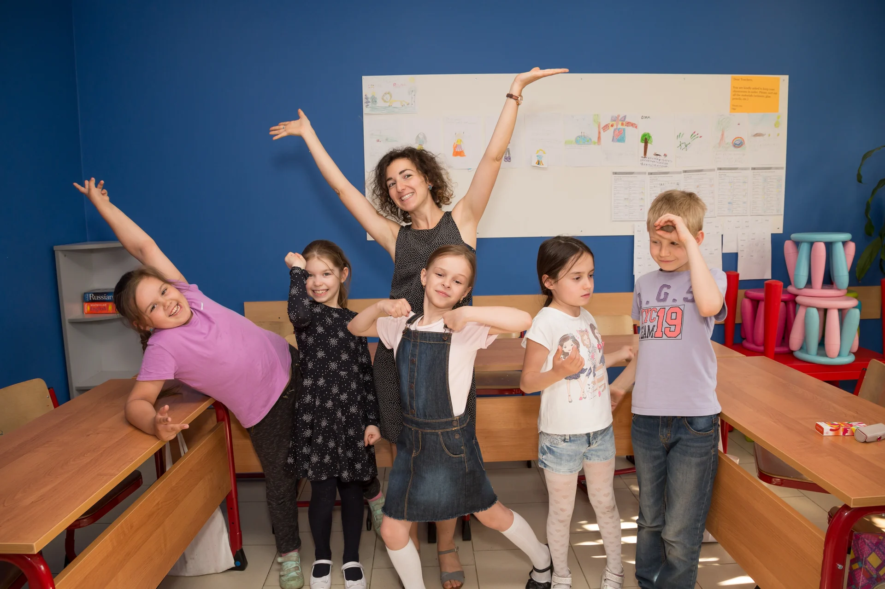
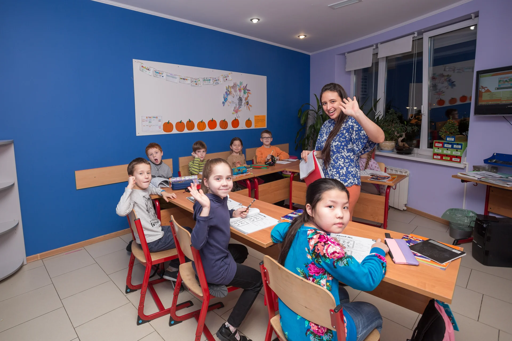
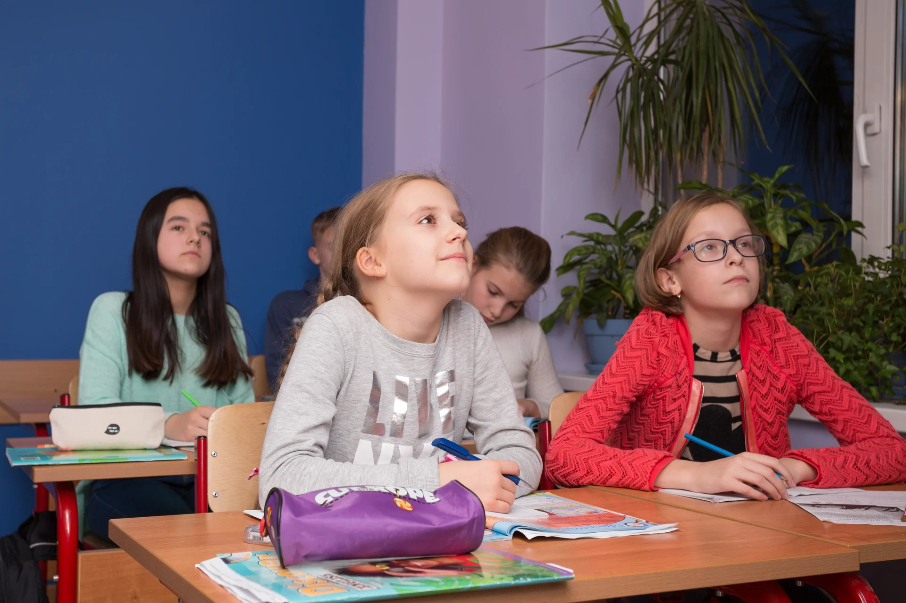
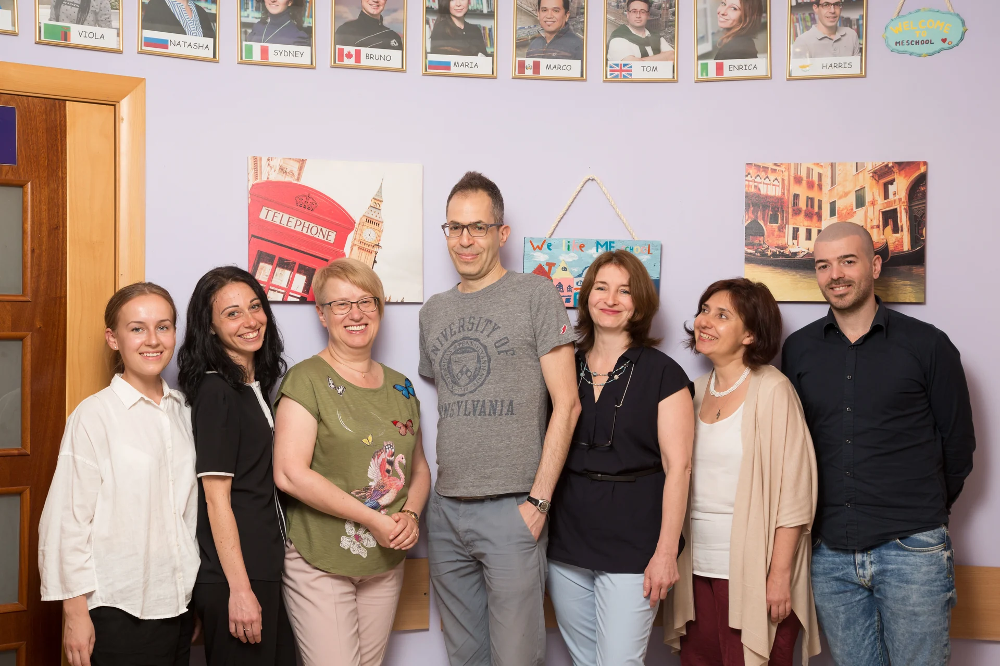
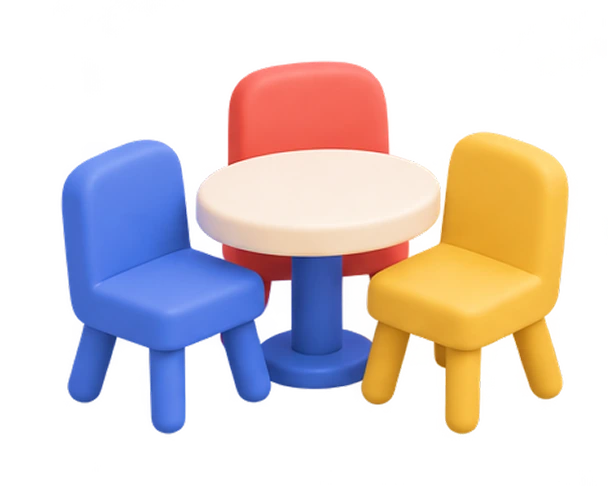
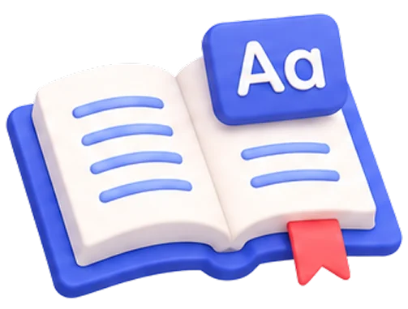
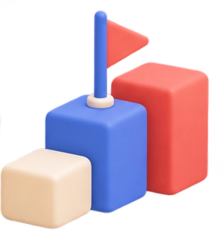

017–9 лет

Начинать
с интересом
Знакомимся с языком, расширяем словарный запас и учимся понимать английскую речь. Первые слова постепенно становятся первым разговором.
С носителями языка — и с удовольствием.
Очные занятия в Куркино для детей
от 7 лет, подростков и взрослых.
Познакомьтесь со школой. Первый урок — 0 ₽

Первое знакомство с языком или новый шаг вперёд. Подберём программу под ваш возраст, уровень и цели.

Знакомимся с языком, расширяем словарный запас и учимся понимать английскую речь. Первые слова постепенно становятся первым разговором.
Развиваем речь, разбираемся в грамматике и лексике. Помогаем увереннее пользоваться английским в учёбе и готовиться к поступлению в языковые вузы.
Для путешествий, общения и собственных планов. Начните с нуля или продолжите обучение: определим ваш уровень и найдём подходящую группу.
Занятия, разговорные встречи и события школы. Немного жизни MESCHOOL — в фотографиях.



Английский становится ближе, когда есть с кем говорить. С 2005 года создаём пространство, где можно пробовать, задавать вопросы и двигаться вперёд с поддержкой преподавателя.
Начать с бесплатного пробногоСлушаем естественную речь, знакомимся с произношением и учимся поддерживать разговор.

У преподавателя есть время для каждого, а у каждого ученика — возможность высказаться.

Разбираем правила и сразу используем их в общении. Язык нужен не только в тетради.

Учитываем знания и цели ученика, чтобы обучение было понятным и последовательным.
Сравните два формата. В каждой карточке выберите нужный вариант — цена обновится автоматически.
Возраст ученика
12 900 ₽
за пакет из 8 занятий
Учитесь вместе, пробуйте новое и поддерживайте друг друга.
Длительность занятия
2 700 ₽
за одно занятие
Работайте с преподавателем в своём темпе: с учётом уровня, целей и задач.
Групповая подготовка — 16 000 ₽ за пакет из 8 занятий. Администратор подскажет, к каким экзаменам можно подготовиться, и расскажет о расписании и длительности уроков.
Знают язык, умеют объяснять и помогают не бояться ошибок. Познакомьтесь с преподавателями MESCHOOL.
Дети и школьники
Wila Namonje. Сертификат MESCHOOL по преподаванию английского языка как иностранного. Диплом РУДН в области общей медицины. Преподаёт английский 5 лет.
Школьники и взрослые
Mohammed El Arqam. Сертификат TESOL/TEFL — преподавание английского языка как иностранного. Обучался на факультете медицины и фармацевтики в Рабате. Преподаёт английский более 20 лет.
Школьники и взрослые
Anastasia Kuchmiy. Сертификат TESOL. Бакалавр филологии King’s College, Лондон. Языковые практикумы во Франции и Германии. Преподаёт английский и французский 15 лет.
Школьники и взрослые
Wilhelmina Nettey-Dodd. Сертификат TEFL. Магистр в области анализа государственной политики. Диплом специалиста по развитию и обучению детей раннего возраста. Преподаёт английский 7 лет.
Школьники и взрослые
Nicolas Riahi. Сертификат TESOL/TEFL. Диплом в области преподавания, управления и профессионального развития. Бакалавр графического дизайна, высшее образование в области экономики и управления бизнесом. Преподаёт английский и французский 10 лет.
Подберём занятия для вас или вашего ребёнка.
Расскажите, что вам интересно, —
с остальным поможем разобраться.
Да. В MESCHOOL можно познакомиться с английским с нуля или продолжить обучение. Подберём программу и группу с учётом вашего уровня.
На этой странице — очные занятия в Куркино. Ждём вас по адресу: Москва, Новокуркинское шоссе, 47.
Обсудим возраст, опыт и цели ученика. При необходимости предложим бесплатное вступительное тестирование, чтобы подобрать подходящий уровень.
Да, первое пробное занятие — бесплатно. Администратор поможет выбрать время и расскажет, как подготовиться к встрече.
Расписание зависит от выбранной группы. Администратор расскажет о доступном времени и условиях пропуска занятий до начала обучения.
Начнём знакомство?
+7 (966) 324-14-99